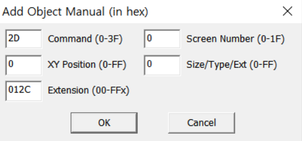
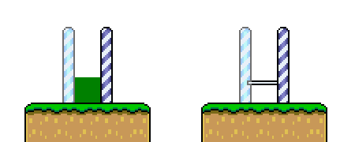
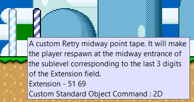
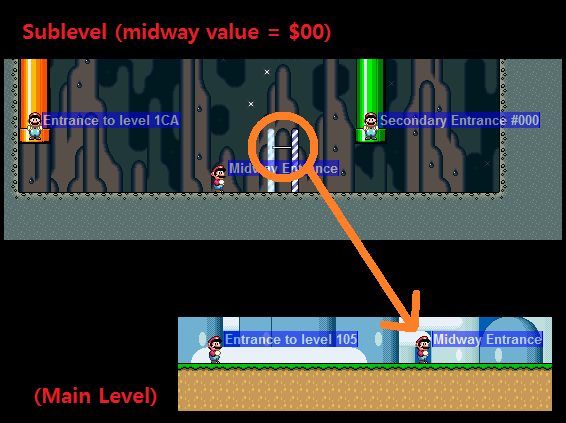
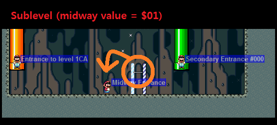
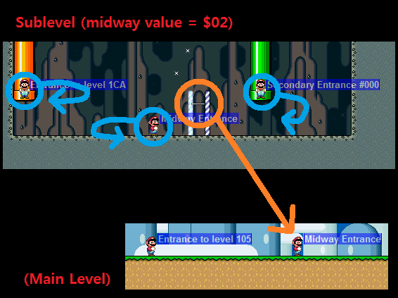
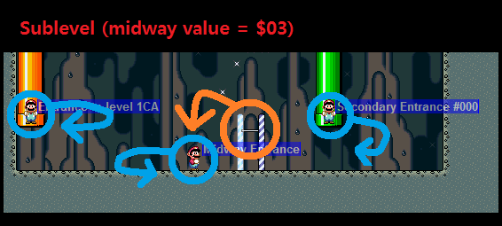

While in Layer 1 or Layer 2 editing mode, open the manual object insertion window either by pressing Insert, or via the menu: Edit > Insert manual....

The custom midway object is inserted into your ROM as 2D and this value goes in the Command field of this dialog.
To change where Mario will respawn after collecting this midway, you will set a 4-digit value in the Extension Field. The value put here will dictate the entrance type as well as either the level number or a secondary entrance number where Mario will respawn.
0000-1FFF: respawn at a secondary entrance (you just put the 4-digit secondary entrance number).4000-41FF: respawn at a main entrance (you put 4000 + 3-digit sublevel number).5000-51FF: respawn at a midway entrance (you put 5000 + 3-digit sublevel number).Keep in mind some values will need leading zeroes to work correctly, e.g. respawning at secondary entrance 12C would be 012C and not 12C.
Note: these settings can be used to make a midway respawn a player in any place in the game not just within the same level or connected sublevels.
Once inserted, it will appear in Lunar Magic as a green square, but will appear as the normal Midway Tape object in-game.

Since Lunar Magic 3.60, you can also add useful tooltip information that will be displayed when hovering over the custom midway object. For more information, check out Lunar Magic Resources.

The retry system has a per-level configuration setting for midways (see Local settings - %checkpoint for details), which sets the behavior of midways bars and level entrances in the specified sublevel.
Using the %checkpoint instruction in settings_local.asm you can set the midway behaviour, for each and every sublevel, with the one of following values:
0: Vanilla behaviour. The midway bar in the corresponding sublevel will lead to the midway entrance of the main level.1: The midway bar in a given sublevel will lead to the midway entrance of this same sublevel (instead of the to main level).2: Any entrance into a sublevel, from an exit-enabled object in another level, will save as a checkpoint and respawning will lead to the corresponding entrance where the checkpoint was gathered. This does not change midway bar behaviour.3: This option enables both the effects of 1 (midway bar) and 2 (level entrances).4: Any main/midway entrance into a sublevel, from an exit-enabled object in another level, will save as a checkpoint and respawning will lead to the corresponding entrance where the checkpoint was gathered. Secondary entrances into the sublevel won't save as a checkpoint. This does not change midway bar behaviour.5: this enables both the effects of 1 (midway bar) and 4 (main/midway entrances).6: Any secondary entrance into a sublevel, from an exit-enabled object in another level, will save as a checkpoint and respawning will lead to the corresponding entrance where the checkpoint was gathered. Main/midway entrances into the sublevel won't save as a checkpoint. This does not change midway bar behaviour.7: this enables both the effects of 1 (midway bar) and 6 (secondary entrances).Note: this setting can be used in conjunction with the midway objects detailed above.



